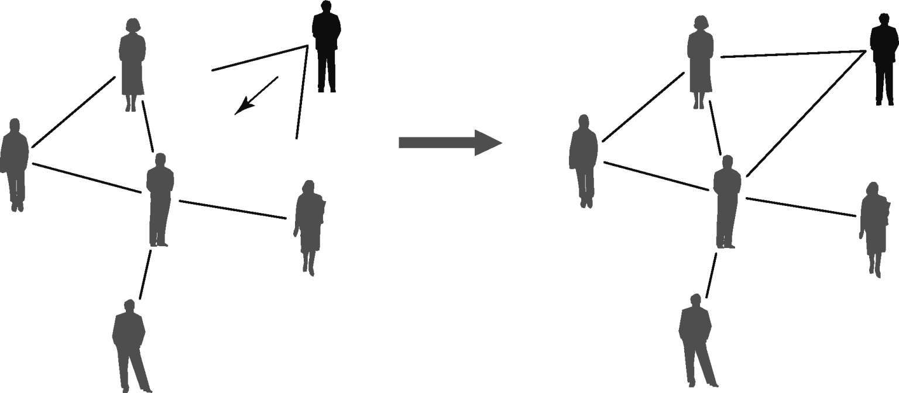

永恒的变化
到20世纪90年代，互联网很大程度上还是一个未知的领域。尽管它已经成为通信、贸易和运输的关键基础设施，但没人清楚地知道其整体架构。管理员控制着本地网络，但他们并不清楚互联网的大规模结构。此外，互联网呈爆炸式增长：从70年代初的几十台机器到上千万台，且增长前景更为广阔。到90年代末，像康柏电脑公司（Compaq）和互联网数据分析合作协会这样的组织启动了一系列绘图计划 ，旨在探索互联网并描绘其全球布局。康柏公司的计划名为“墨卡托”，以此纪念在16世纪绘制了最为重要的世界地图之一的地理学家，该地图将刚被发现的美洲大陆包含在内——而互联网被认为是一个尚待探索的“新世界”。多亏了这些以及其他项目，互联网地图才得以成为可能，它的增长现已受到监控。
但互联网的动态并未停止：此时此刻，路由器、计算机、电缆和卫星连接都仍在不断被添加或移除，这带来了持续增长的净效应。尽管缺乏规划，但互联网的增长过程也并非完全随机。相反，互联网是一种高度有序和高效的结构。这种涌现的秩序一定是构建网络之个体行为的某种规则性的后果。小规模的机制也必定存在，它们经由大量的交互迭代过程，最终产生了一种在大规模层面井然有序的结构。而解开隐含于网络结构形成过程之下的基本原理，对理解这些网络结构的自组织进程而言至关重要。
甚至那些看起来完全静止的网络，实际上也在进行着某种动态过程。细胞中的基因、蛋白质和代谢物所构成的网络，大脑中的神经网络以及生态系统中的物种网络等等，它们似乎都固定不变：基因调控、代谢途径、神经元连接或猎物–捕食者关系都相对稳定。然而，细胞内的网络在每个个体的发育期间呈爆炸式增长，并且随着生物体的老化及其对环境的应变过程而不断变化。大脑的可塑性在整个生命过程中可能会下降，但它并不会完全消失。物种灭绝或新物种入侵则会彻底重塑食物网。此外，所有生物网络在长期内都会因为自然选择的作用而发生改变。类似的事情还发生在其他明显的静态网络中，例如电网或语言网络。电网建成之后，由于事故和技术发展，它们会慢慢调整自身的形状。语词网络则随着说话者的改变而改变，并且，随着语言整体的演变，新词和新的语义关系也会被引入。
在其他网络中，变化主要集中在连接上，而顶点集合几乎不可改变。例如，某一国家的银行每天都会在银行同业网络中建立不同的借款模式。偶尔，该网络的顶点集合也能发生改变，比如在银行破产或者新的银行出现在市场上之时。然而，这种变化发生在比交易（即边的重新排列）更长的时间段内：在给定的一天中，网络中的变化主要与边相关。类似的事情不仅发生在股票间的价格相关性网络中（相关性的变化比实际的股票组频繁得多），也发生在世界贸易网络中（世界各国经济关系的变化比新的国家通过分离或联合而建立更为普遍），还有机场网络中（不管在哪一年，都仅有少数新机场开张，而大量航线则处于变化之中）。
完全相反的情况则出现在另外一组网络中：在这些图中，新节点被不断添加进来，而这一进程比连线的重新排列重要得多。这种情况最确切的实例是科学论文中的引用网络。引用较早论文的新论文每天都会出现，一旦发表，相应的引用关系便无法再次更改。
最后，在一些网络中，添加（或减少）节点和连线的动力会以相同的速度发生，并让位于一个相当复杂的过程。万维网以创建和删除新网页和新超级链接的方式不断更新。在维基百科这样的特定网站中，每天都会有新文章和文章间的新链接被创建出来。
可能的网络动力的范围十分广泛：网络科学家已经制定了各种衡量标准、数学模型和计算机模拟，以掌握这一过程背后的基本机制，以期理解这些网络的自组织原理。
富者更富
20世纪60年代初，社会学家哈丽雅特·朱克曼采访了一批获得诺贝尔奖的科学家，其目的是找到这些人工作方式中的独特之处，以及他们研究工作成功的秘诀。她在这些诺奖获得者的回答中发现了一个反复出现的主题。一位诺贝尔物理学奖获得者说：“在授予荣誉这件事上这个世界很奇怪。它往往将荣誉给予那些（已经）出名的人。”一位诺贝尔化学奖获得者补充道：“当人们在报纸上看见我的名字，他们往往会记住它 ，而忽略其他人名。”而一位生理学和医学奖获得者则具体谈道：“［当你在读一篇科学文献时］你常常注意到你熟悉的名字。即便排到最后，它也会让人印象深刻［……］你会记住它，而非长长的著者名单。”“最出名的人会获得更多的声誉，在程度上毫无节制的声誉。”物理学奖获得者如此总结道。
这些观察促使另一位社会学家（朱克曼后来的丈夫）罗伯特·默顿于1968年提出了一个出色的定理。默顿提出，科学处于马太效应 这种社会机制的影响之下。这个名字来自《马太福音》：
依照默顿的观点，这种机制在奖项、资助、关注度、声望等的分配中起着一定的作用。拥有大量此类资产的科学家可以轻松获得更多的类似资产。另一方面，那些缺乏者想要获取或保持这些资产就十分困难。
1976年，物理学家和科学史家德里克·德·索拉·普莱斯发现了支持这种观点的量化证据。普莱斯分析了大量因相互引用而彼此关联的科学文献。他发现，在特定时期内被大量引用的文献往往也会在之后获得更多引用，而那些一开始仅被少量引用的文献后来也未增加多少被引数。普莱斯从数学上证明了这个简单的法则能够解释高引文献（即引用网络的枢纽节点）出现的原因。更确切地说，他证明了这种机制能够解释为何每篇文章的引用数量分布显示出了幂律的肥尾特征。
普莱斯的模型是统计学家乔治·尤德里·尤尔和社会科学家赫伯特·A.西蒙早前开发的数学模型的变体，但是人们直到1999年才明白，这种机制可以解释网络枢纽、异质性、标度不变性在不同网络中整体以肥尾分布出现的原因。该模型的实现归功于物理学家奥尔贝特–拉斯洛·巴拉巴西和雷卡·奥尔贝特。巴拉巴西和奥尔贝特提出了网络增长的数学模型。他们设想了一个始于少量顶点（甚至仅有两三个）随机连接的图形。新的节点以稳定的速度加入到这个原初的核心中，每个节点都带有给定数量的连接。一个简单的规则确定了新节点是如何连接的：新节点会偏好已有许多连接的旧节点。这种机制又称优先连接 （图10）。原则上，新节点可以加入任何旧节点之上，但旧节点的度数越高，它吸引新节点的概率便越高。偶尔，连接较少的节点也会接入新的连接，但大多数时候却是枢纽节点更具吸引力。

图10 在网络增长的优先连接机制中，新节点会优先连接度数高的旧节点
这一过程可从数学上加以研究，并能在计算机上进行模拟，人们可以测量真实的网络以确定其是否在起作用。一开始，所有节点多少都具备相同的度数。然而，随着节点的增长，有一些开始累积比其他节点更多的连接。某节点在特定时刻所具备的连接越多，它便越能够吸引新连接。这也是为何优先连接原则又被称为富者更富 机制的原因。结果，连接性最初的小小差异会逐渐放大。因此，不同节点的层级结构便出现了，其中节点的度数差异极大，从连接最少的节点到那些累积了众多连接的枢纽不一而足。最后得到的网络具有异质性，且呈幂律度数分布。
巴拉巴西–奥尔贝特模型证明了，自下而上的增长机制能够产生异质性，而不用强加任何自上而下的设计。网络的全局标度不变性是个体及其局部选择的迭代结果：偏向连接更多的节点而不是更少的。这个模型利用概率以使个体在一定程度上可以偏离这种选择行为：一些节点可以决定连接度数低的节点。然而，总体的趋势决定结果。作为进一步的确认，我们可以检查在没有优先连接原则下成长起来的网络是否未出现异质性。的确，新节点会随机地连接到旧节点上，如此一来旧节点的度数并不影响自身吸引新连接的能力。结果出现了同质网络，其中每个节点都有着大致相同的度数。
普遍的机制
优先连接特指网络中的此种机制，而同样的机制还存在于许多自然和社会现象中，这些现象未来的演化取决于它们的历史。例如，城市规模依其目前的大小随时间而改变：大城市会经历较大的扩张，小城市则变化很小。明天的股票价格通常也与今天的价格构成一定的比例关系。这种机制也被称为乘性噪声 。这一过程可能会在众多网络中起作用有着各种各样的原因。在某些情况下，具备许多连接是被新节点发现的主要方式。
与许多其他网站连接的网站要比那些连接更少的网站更容易被浏览网页的人发现。高引文献中的情况也是如此。这种增强的受关注程度使得它更容易获得更多连接和引用。
在其他情况下，连接因其自身之故而具有吸引力。社会学家发现了间接择偶 这一现象的证据，即人们选择自己的配偶不仅基于相关个体的个人特征，还会考虑他人意见。例如，一项研究发现，同一人在照片中被许多其他女性环绕时，要比其独照能获得处于大学年龄段的女性更高的评价。先前一系列合作伙伴的长名单可能会让一个人处于吸引更多合作伙伴的优势地位。这便是为何优先连接也被称为受欢迎具有吸引力 原则的原因。
优先连接产生的一个更加有意的理由是，与枢纽节点相连能够使相关节点更容易接近许多其他节点。自1978年放松管制以来，许多航空公司纷纷采取了枢纽政策 ，此政策在于选择具备良好连接条件的机场作为它们最偏爱的目的地。动机很明确：由于这些机场与大量目的地相连，与之关联便会吸引更多的潜在客户。类似的事情也发生在连锁董事网络中：任职多个董事会的人可以获取大量信息，并具有广阔视野，这又使他具备很大的吸引力从而被雇用到更多的董事会中。访问在互联网中也至关重要。互联网的大部分由私人企业建立和维护，它们被称为互联网服务提供商 。当它们中有一个建立了新的基础设施，其优先考虑之事便是允许用户快速访问网络中储存的信息。考虑到这一点，互联网服务提供商并不会随机选择它们想要连接的路由器，更不会只选择更近的。相反，它们会选择那些能够保证以最少的可能步骤连接到最多服务器的路由器。那么，又有什么比枢纽节点更能实现这一点？在互联网的情况中，绘图计划所提供的数据似乎符合优先连接的假设。数字显示，某一特定时刻发布的地图中带有很多连接的顶点，往往在下一幅图中会有更多连接。
在某些情况下，优先连接会以其他机制的面目出现。设想某人想要创建个人网页。常见的办法是查看朋友的页面，挑选一个不错的用作模板。由于人们常与其朋友有着共同的兴趣，因而新网页很可能会保留模板的大多数链接，或许会改变其中少数。所以，新的页面最终将是模板的副本，变化很少。现在，这种机制掩盖了优先连接的形式。事实上，模板网页会指向什么页面呢？它们很可能会指向枢纽页面。仅仅因为枢纽页面存在并俘获了万维网中的大部分连接，任一给定页面都更可能指向枢纽处，而非那些连接较少的页面。因此，如果某个页面被复制，则每个副本都会为枢纽带来更多的连接，从而形成有效的富者更富过程，优先连接规则因而得到恢复。复制机制看起来奇怪，但实际上它在某些情况下是主导因素。例如，一篇文章中的科学引文通常来自同一领域的其他文章，并往往会巩固该引用文章的权威性。
但复制机制最有趣的一种应用体现在基因网络中。基因组常常通过复制和多样化 的过程演化。细胞复制时，所有的DNA都被复制到新细胞中，但有时候也会出错：原始DNA链条的一个完整基因被复制，并在子细胞的基因组中出现两次（复制 ）。大多数时候，这个新基因只是合成多余的蛋白质，这些多余蛋白质与另外那个相同基因所合成的蛋白质功能相同。然而，在进一步的复制中，两个相同基因中的一个可能会发生突变，从而会使自身合成的蛋白质行使新的生物功能，比如，与之前和自己一样的蛋白质之外的蛋白质发生反应（多样化 ）。许多情况中都已经发现了这种演化机制。现在，这种机制在蛋白质相互作用网络中的转化完全类似于复制机制：新的节点进入网络（复制和突变的蛋白质），它带来了一些前代的连接（即它最初与之反应的蛋白质），以及由突变而来的一些新蛋白质。高度连接的蛋白质在这种机制中占据天然优势：并非它们更可能被复制，而是它们比那些连接较弱的蛋白质更可能与复制蛋白质相关联，因而更有可能获得新连接。
尽管基因复制的作用仅在蛋白质相互作用的网络中显现，但代谢网络中也存在着支持优先连接的证据（直接或伪装）。这种关联过程的一个明显后果是，枢纽节点通常在网络里的旧节点中产生，因为它们之前有机会从“先发优势”中获益。现在，代谢枢纽正是可能在生命最初演化过程中并入基因组的原始分子，以及RNA（核糖核酸）世界的残余物，比如辅酶A、NAD（烟酰胺腺嘌呤二核苷酸）和GTP（鸟苷三磷酸），或者最原始代谢途径的元素，比如糖酵解和三羧酸循环。在蛋白质相互作用网络的背景下，人们通过跨基因组的比较发现，平均来说，演化上较老的蛋白质与其他蛋白质之间的联系要比较新的蛋白质多。
优先连接并非网络中唯一起作用的机制，也并非所有的异质网络都起源于此。然而，巴拉巴西–奥尔贝特模型还是给出了重要的关键信息。某种简单的局部行为经过多次交互迭代作用，便能产生复杂的结构。这种结构是在没有任何整体设计下产生的，即便我们允许在行为中出现一定程度的随机性，它也会出现，这解释了就整体趋势而言的个体偏差。
适应度起作用之时
当偶然的性关系在紧要关头时，人们往往对潜在性伙伴的某些特征（例如政治观念、社会阶层或是否抽烟等）非常宽容。然而，当考虑订婚或结婚时，这些因素就变得十分重要。这是社会学家爱德华·O.劳曼对90年代中期的数据进行分析之后得到的信息。这些数据表明，美国约有3/4的已婚夫妇都具备大量的相似特征。其中包括，属于同样的社会阶层、种族群体，教育水平相同，甚至具有相近的魅力、政治观点和健康行为，比如饮食和吸烟习惯等。另一方面，当其他类型的性关系出现问题之时，相应的比例会低许多，尽管依旧很高（超过50%）。
同配生殖 （即相似个体彼此结合的倾向）甚至在那些婚姻非包办、理论上任何人都能与其他任何人结合的社会中都是很强的趋势。在躁动的大学时代，个人的声望——例如，对此人之前的性伴侣数量进行衡量得出——可以成为塑造性关系网络的相关驱动力。但是，人们安定下来后，更严格的标准便会发生效力。尽管富者更富能在第一种情况中发挥作用，但它几乎无法解释第二种情况。同配生殖是同质相吸 的一个具体例子：大量社会学证据表明，它是由相似个体相互关联所构成的一般趋势，也是塑造社交网络的强大力量。在巴拉巴西–奥尔贝特模型中，连接到一个节点的主要标准便是该节点的连接数，但在许多情况下，其他特征对吸引新连接而言重要得多，不管实际的连接数为多少。
巴拉巴西–奥尔贝特动力机制的一个结果是，旧节点相对于新节点而言具备累积优势。然而，实际情况并非总是如此。举个例子，万维网的旧日荣光，比如麦哲伦或Excite等搜索引擎大多已被遗忘。谷歌或雅虎等后来者已取代了前者的位置。累积优势在新的参与者进入游戏时可被完全推翻（想想脸书的情况）。新手往往具备一些固有特征，这让它们比之前的参与者更具吸引力。在这种情况下，网络的连接性并非完全由节点度数驱动，正如巴拉巴西–奥尔贝特模型中所展现的一样。相反，每个节点的某种特殊的特性能够在节点获得连接的能力中发挥十分重要的作用。这种特性被称为节点的适应度 ，或称为节点的隐变量 ，它能够塑造网络的结构，却不像连接数那般显而易见。
2002年，物理学家圭多·卡尔达雷利、安德里亚·卡波奇、保罗·德·罗斯·里奥斯以及米格尔·安琪儿·穆诺兹共同设计了一个仅凭节点适应度便可产生网络的模型。其基本思路与随机图相同：在一组节点内，考虑所有可能的配对，再依据某一给定概率看配对节点之间是否能够连接。然而，在这种情况下，概率并不固定，而是依节点在配对中的适应度而改变。模型首先会为节点分配适应度。比如，这个隐变量可能代表了个人的收入。在此情况下，适应度在节点间的分配便会类似于国家的财富分配：先是少数十分富有的节点，然后是一定数量的上层中产阶级节点，之后便是下层中产阶级节点，诸如此类。定义连接的概率是第二步。若要模拟高度隔离的社会，则可建立以下规则：两个人形成社会关系的概率取决于他们收入的差异；具体而言，这种概率与收入差距成反比。也就是说，收入差异越大，两人获得连接的概率便越小。两个收入差别很大的人之间也可能建立联系，但这绝不是社会的主流趋势：一般而言，同质相吸原则将最终胜出。
适应度模型这种机制可能看起来过于简化，但在某些情况下，它能完美地发挥作用：例如，在世界贸易网络中便是如此。在这种情况下，适应度便是世界各国的国内生产总值（GDP）。连接的规则如下：两个国家的适应度越高，它们彼此关联的概率就越大——这将是某种适者更富 的机制，其中那些GDP极高的国家会在彼此之间建立更多的商业联系。这种机制与同质相吸原则并不相同，因为，尽管GDP高的国家之间会建立许多联系，但GDP较低的国家并不会与其他低收入国家建立联系：它们的联系仍旧少得可怜。物理学家迭戈·加拉斯凯利和马里耶拉·罗弗雷多于2004年证明，这些组成部分足以精确预测世界贸易网络的特征，只要人们在模型中写入任意时刻的已有商业联系总数。例如，该模型精确地预测到了网络的节点度数分布态势。这表明，隐含在世界贸易网络这种自组织之下的基本机制已被适应度模型这种简单的动力机制捕捉到了。
跟优先连接一样，适应度机制不大可能在所有的现实世界网络中起作用。巴拉巴西–奥尔贝特模型被用于扩张中的网络时还算可靠，适应度模型对静态网络也有效，后者的节点数大致是固定的。然而，这两种模型还能同时起作用：2001年，物理学家吉内斯特拉·比安科尼和巴拉巴西共同将适应度这一概念引入到优先连接模型中，证明了这两种效应的共同作用良好预测了网络的拓扑属性。但必须注意的是，适应度模型并不总呈幂律度数分布。大范围的适应度和连接规则才能产生幂律度数分布，但很多其他的则无法做到这一点。然而，这并非某种局限性，而是这种模型积极的一面，这使得它能应用于像世界贸易网络这样的非异质网络。
各种策略
邻家女孩（或男孩）的神话已成为历史。根据社会学家米歇尔·博宗和弗朗索瓦·埃朗1989年的一项研究，80年代中期，在自己小区找到配偶的人已微乎其微了，在法国这一比例仅为3%。然而，这种情况仅在30年前还十分普遍：博宗和埃朗发现，这一比例在1914年到1960年间为15%-20%。世界上许多国家中的情况依旧如此。在某些情况下，婚姻（以及一般意义上的社会关系）既不受某种流行趋势驱动，也不受相似性标准驱动：倘若地理限制影响很大（比如，无法定期搭乘远程交通），人们便会被迫与邻里以及同乡交友。
在这些情况下，网络的顶点被嵌入到物理空间中，这会带来许多重要后果。有时，人们几乎可以不费任何代价地与任何人建立联系（比如在虚拟网络上结交朋友）。但在其他情况下，远程联系则代价高昂。这两种情况下的网络属性也十分不同。许多基础设施网络（火车、煤气管、高速公路等）会显示出一种偏差，因为它们嵌入的是物理空间。其他网络则嵌入到时间之中：例如，科学论文会在某天发表，这会在网络连接中造成某种偏差，即新论文只能引用旧论文，而旧论文却无法引用新论文。
其他偏差和策略能够影响网络的形成。社会学家确定了人们在社交网络中建立联系的两种基本激励机制：一为基于机遇的前因 ，即两个人会建立联系的可能性，二为基于利益的前因 ，即某种促使关系形成的效用最大化或不适感最小化机制。某种数量上的全局最优化对于塑造技术网络能够发挥重要作用：例如，使万维网搜索成本最小化的压力会导致人们倾向于对最短路径长度和连接密度进行优化。
最后，甚至还可能出现这种情况：表面上的自组织起源于完全的随机状态。设想某公司发布了新的社交网络，并为10万人提供了昵称。然后，该公司许可1个人与其他1 000个人建立联系，2个人可与其他500人建立联系，3个人可与333人建立联系，4个人可与其他250人建立联系，以此类推。人们并不认识昵称背后的人，所以，他们会随机地选择伙伴。显然，这一过程中并不存在自组织：该公司建立的规则决定了网络的结构。然而，最后形成的网络在结构上 仍呈现出幂律度数分布。这个例子表明，在某些情况下，幂律并不总是意味着自组织过程。
若人们试图通过为其行为建模的方式来理解网络的特征，则策略、偏差、过程和动机等一系列广泛的因素都必须被考虑进去。甚至，每个个体网络都需要自己的模型。然而，一些十分普遍的机制，比如优先连接或与适应度相关的动力机制，都可能会在许多明显不相关的众多网络的形成过程中发挥作用。本章描述的模型简单地解释了，在缺乏全局规划的情况下，局部机制何以确实能产生规模庞大、复杂、有序及有效的结构。